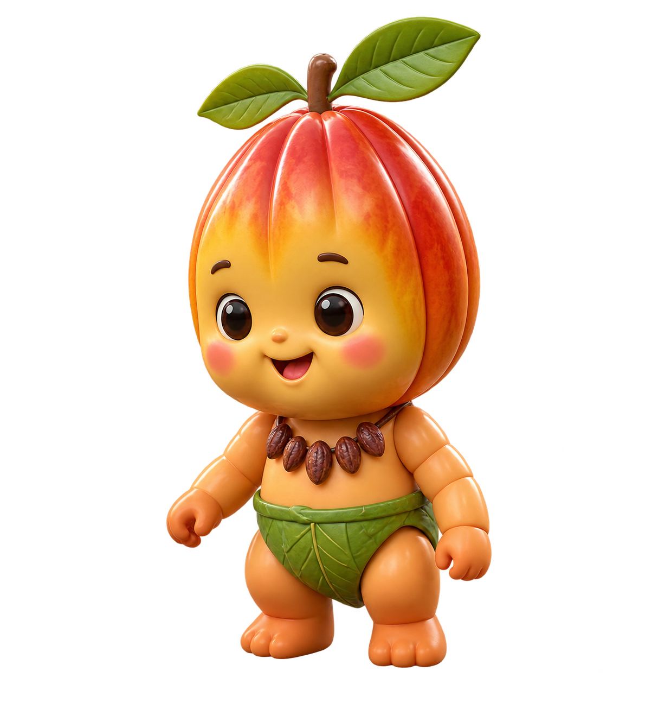

可可果
果實有明顯紋理與飽滿外形，成熟時會呈現不同色彩，是可可故事的第一個畫面。
A LITTLE SWEET LETTER FROM TAIWAN
有些話卡在嘴角，不如讓一口可可替你說。從可可果實到手心溫度，我們把「謝謝你」、「辛苦了」和「我愛你」，揉進每一份甜裡。

生活總是忙碌，很多時候「謝謝你」、「辛苦了」或是「我愛你」，常常卡在嘴角難以開口。
我們相信，可可不只是一份甜點，更是一封可以食用的情書。從選豆、調溫到包裝，每一道工序都疊加著手的溫度，讓心意有一個可以被接住的形狀。
這裡只介紹可可本身與製作流程，不延伸未確認的產地、營養功效或認證資訊。
果實有明顯紋理與飽滿外形，成熟時會呈現不同色彩，是可可故事的第一個畫面。
果實中的種子經過後續處理，才會成為熟悉的可可原料；每個步驟都會影響最後的風味表現。
調溫是巧克力製作的一環，讓成品擁有穩定的口感與漂亮的光澤。
以下為品牌概念展示款；實際成分、規格與價格應以正式產品標示為準。
把感謝，包進一份可可禮物
給忙了一整天的那個人
讓難以開口的話先抵達
品牌目前以「選豆、調溫、包裝」作為手作流程的敘事，實際製程與原料資訊將依未來產品資料補充。
可可寶寶以收藏公仔的質感呈現：圓潤比例、柔和光澤與可可果外型，陪你把想說的話送出去。
圖片素材：使用者提供角色場景經編修後去除背景。網站目前沒有 AI 影音素材，因此暫不放置影音展示區。
選一個最接近現在心情的選項，讓一克心意替你配對一份概念禮物。